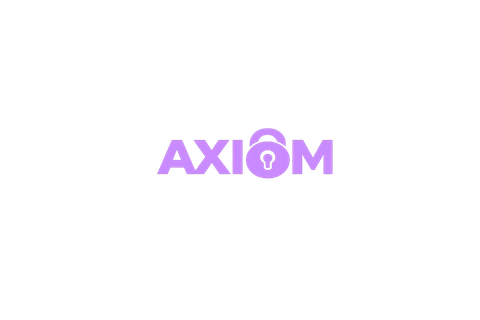

An archive of projects and research from the last few years.

A local-first data-loss-prevention system, built as two native desktop apps. Sentry watches open documents and the clipboard on an employee's machine, then redacts flagged PII directly inside PDFs and Office files, using Google's Gemma 3 4B for contextual detection alongside regex for structured data like card numbers. Console gives security teams a live view of organizational risk without any file ever touching a network.
A web app that scans uploaded video for seizure-risk visuals, such as rapid flashes, harsh contrast edges, and sudden color shifts, using frame-by-frame luminance analysis, and returns a timestamped risk map. From there it can auto-cut the flagged segments, or leave everything in and apply localized dimming and contrast smoothing so the footage stays intact but safer to watch. Built during a 24-hour hackathon with three teammates.
Benchmarks five regression models on 50,530 readings from a wind turbine in Turkey, testing which one predicts wind speed most reliably. Random Forest Regression came out on top, backing its use for real-time forecasting to improve turbine efficiency and maintenance planning. The paper has since picked up 500+ downloads and 1,000+ views.
Why does the ratio of consecutive terms in Fibonacci, Lucas, and other second-order recurrence relations always converge to the golden ratio, no matter the starting values? Proves the general limit for any relation of the form Gn = xGn-1 + yGn-2.